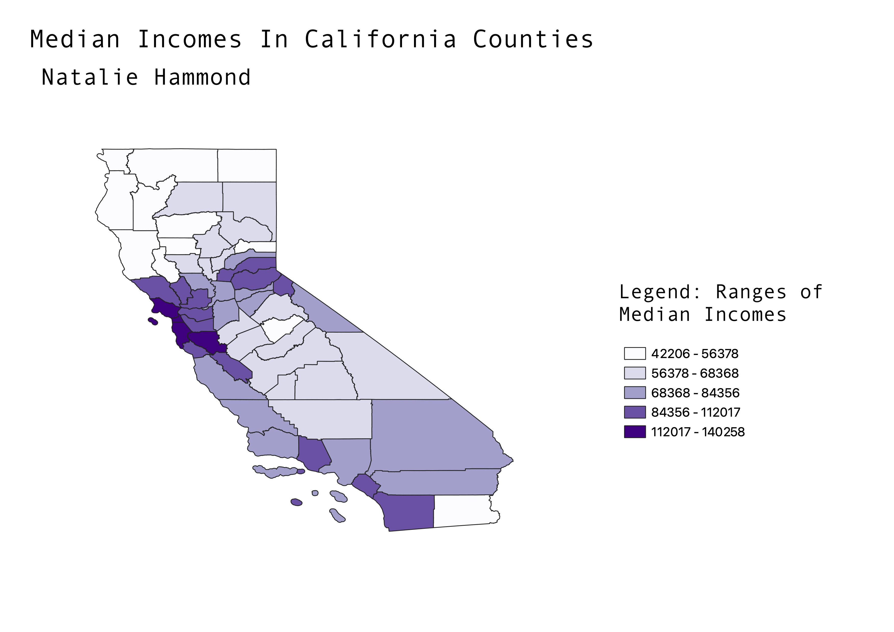

Homework 6: Census data choropleth
Natalie Hammond
My map represents the median income level for each county in California.
The lowest income range is from $42,206-$56,378. The highest income range is $112,017-$140,258.
Since this is median, it is not an average of incomes, but the middle value in the range of
incomes for all residents in a given county. The white/light purple counties correspond to
counties with lower median incomes, and dark purple counties have highest median incomes.
This data is from 2022 Census data.

Data used for this project
CSV dataset
Link to shapefile